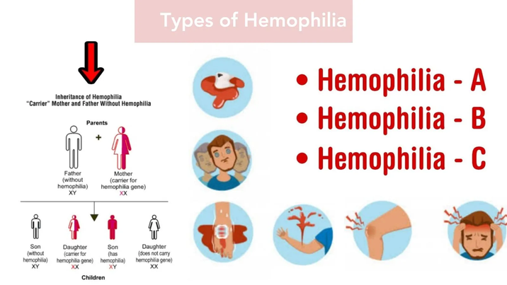
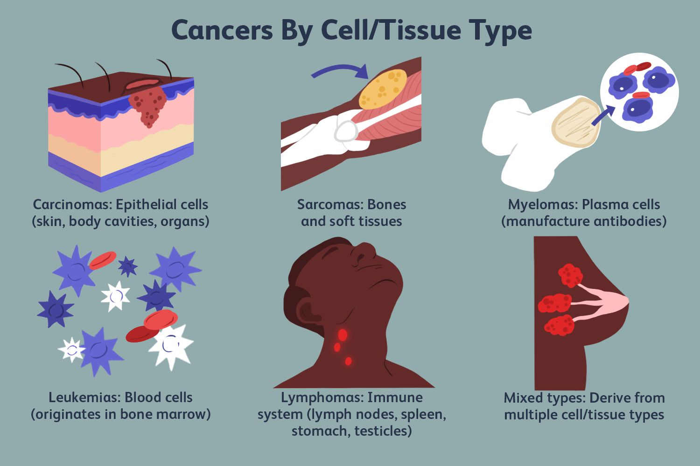
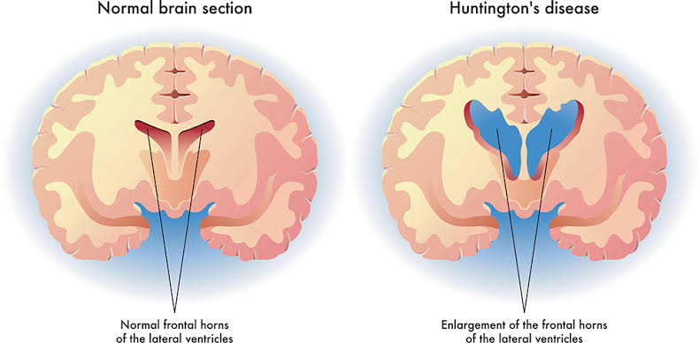
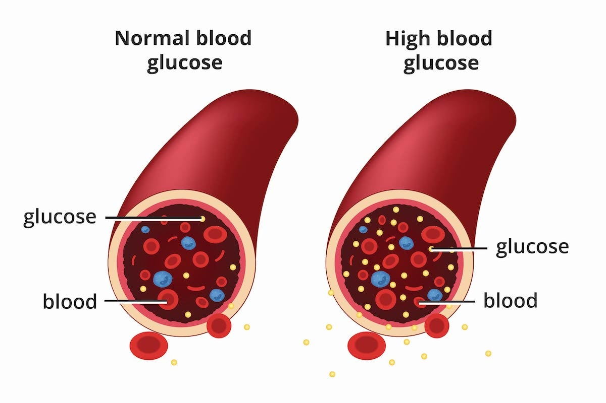
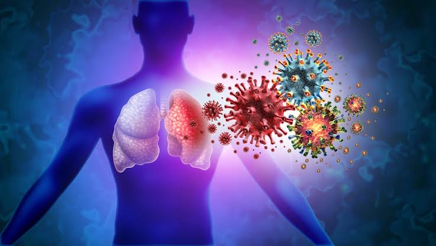
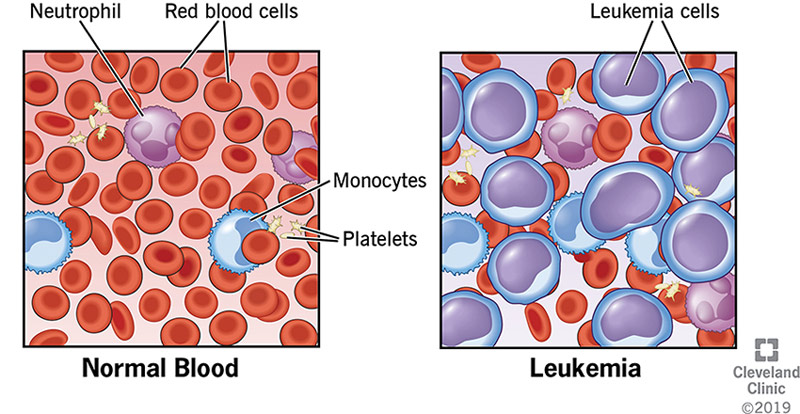
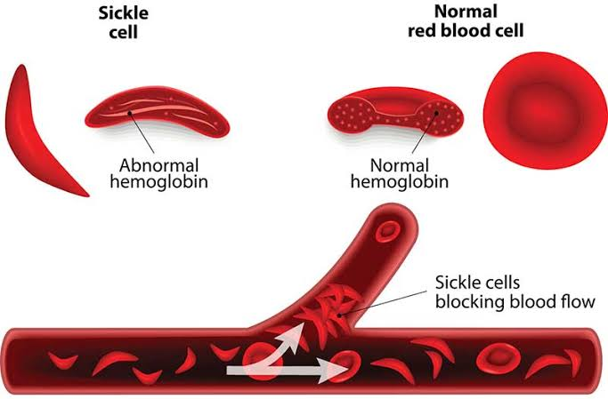
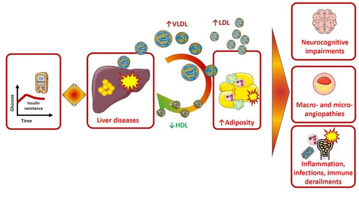

Some disorders that are currently being treated by gene therapy or has the potential of being treated:
1. Severe combined immunodeficiency (SCID, often called bubble boy disease) due to adenosine deaminase
(ADA) deficiency - is a rare genetic disorder characterized by a severe impairment of the immune system.
This condition results from a deficiency in adenosine deaminase (ADA), an enzyme crucial for the development
and function of certain immune cells. As a consequence, individuals with SCID are highly susceptible to severe,
life-threatening infections from a young age. The nickname "bubble boy disease" originates from the extreme
measures sometimes taken to protect affected individuals, including living in sterile environments resembling
a bubble to minimize exposure to pathogens. Source: https://mynbc15.com/news/nation-world/living-in-isolation-seattle-baby-diagnosed-with-rare-bubble-boy-disease
2. Hemophilia - is a genetic disorder characterized by a deficiency or absence of specific
proteins called clotting factors, which are essential for blood clotting. This deficiency leads to prolonged
bleeding episodes, both internally and externally, even from minor injuries. Hemophilia is typically inherited
in an X-linked recessive pattern, primarily affecting males, while females are usually carriers of the gene.
Symptoms of hemophilia can range from mild to severe, depending on the level of clotting factor deficiency.
Treatment involves replacing the missing clotting factors through intravenous infusions, along with supportive
care to manage bleeding episodes and prevent complications.

Source:https://medsurgeindia.com/hemophilia-types-causes-symptoms-diagnosis-and-treatment/
3. Blindness (Leber congenital amaurosis) - Leber congenital amaurosis (LCA) is a rare inherited eye disorder
that primarily affects the retina, the tissue at the back of the eye responsible for sensing light and transmitting
visual signals to the brain. Individuals with LCA typically experience severe visual impairment or blindness from
birth or early infancy. Symptoms may include decreased vision, involuntary eye movements (nystagmus), sensitivity to
light (photophobia), and a lack of visual responsiveness. LCA is caused by mutations in various genes involved in
retinal function and development. Treatment options for LCA are limited, but research into gene therapy and other
emerging treatments offers hope for potential therapies aimed at restoring vision or halting the progression of the
disease. Management typically involves supportive measures to optimize remaining vision and address associated
complications. Source: https://www.yourvisioncare.net/vision-topics/general/592345-treatments-for-glaucoma/
4. Cancer - is a complex group of diseases characterized by the abnormal growth and spread of cells.
It can affect any part of the body and has various forms, each with its own set of symptoms, risk factors, and treatment
options. Cancer develops when genetic mutations occur, disrupting the normal regulation of cell growth and division.
These mutations can be caused by a combination of genetic factors, environmental factors (such as exposure to carcinogens),
lifestyle choices (such as tobacco use or poor diet), and certain infections. Common types of cancer include breast cancer,
lung cancer, prostate cancer, colorectal cancer, and skin cancer, among others. Treatment options for cancer may include
surgery, chemotherapy, radiation therapy, immunotherapy, targeted therapy, hormone therapy, or a combination of these
approaches, depending on the type and stage of cancer and the individual's overall health. Early detection through screening
programs and adopting healthy lifestyle habits can significantly improve the chances of successful treatment and long-term
survival.

Source: https://www.verywellhealth.com/more-cancer-types-4158486
5. Parkinson's disease - Parkinson's disease is a progressive neurological disorder that affects movement. It is
characterized by a gradual loss of dopamine-producing neurons in the brain, particularly in a region called the substantia
nigra. Dopamine is a neurotransmitter that plays a key role in coordinating movement, so its depletion leads to the
characteristic motor symptoms of Parkinson's disease, such as tremors, rigidity, bradykinesia (slowed movement), and
postural instability. In addition to motor symptoms, individuals with Parkinson's disease may also experience non-motor
symptoms, including cognitive impairment, mood changes, sleep disturbances, and autonomic dysfunction. The exact cause of
Parkinson's disease is not fully understood, but it is believed to involve a combination of genetic and environmental
factors. While there is currently no cure for Parkinson's disease, treatments such as medication, deep brain stimulation,
and physical therapy can help manage symptoms and improve quality of life for many patients. Ongoing research into the
underlying mechanisms of the disease and potential therapeutic approaches offers hope for future treatments.
Source: https://zhaoneurology.com/parkinsons-disease/
6. Huntington's disease - A hereditary disorder of the central nervous system characterized by progressive motor and cognitive
decline. It usually begins in middle age and leads to chorea (involuntary jerky movements), cognitive decline, and
psychiatric symptoms.

Source: https://www.healthdirect.gov.au/huntingtons-disease
9. Heart disease - Also known as cardiovascular disease, it refers to a range of conditions that affect the heart,
including coronary artery disease, heart rhythm problems, and heart defects present at birth. These conditions can lead to
heart attacks, heart failure, and other serious complications. Source: https://www.southcoasthealth.com/posts/view/402-what-causes-heart-disease
10. Diabetes - A chronic condition characterized by high levels of glucose (sugar) in the blood. It occurs when the body
either does not produce enough insulin or cannot effectively use the insulin it produces. There are two main types: type
1 diabetes, which is typically diagnosed in childhood or adolescence, and type 2 diabetes, which is more common in adults.

Source: https://www.southcoasthealth.com/posts/view/402-what-causes-heart-disease
11. Viral infections - Infections caused by viruses, which are tiny infectious agents that can only replicate inside
the cells of living organisms. Viral infections can cause a wide range of symptoms, from mild cold-like symptoms to severe
illness.

Source: https://www.moffitt.org/endeavor/archive/should-i-get-the-rsv-vaccine-if-i-have-cancer/
12. Leukemia - A type of cancer that affects the blood and bone marrow, where blood cells are produced. It results in the
overproduction of abnormal white blood cells, which crowd out healthy blood cells and impair the body's ability to fight
infection.

Source: https://my.clevelandclinic.org/health/diseases/4365-leukemia
13. Sickle cell disease - A genetic disorder that affects the red blood cells. It causes the red blood cells to become rigid
and crescent-shaped (like a sickle), which can block blood flow and lead to pain, organ damage, and other complications.

Source: https://www.allaboutvision.com/conditions/related/sickle-cell-disease/
14. Lipid metabolism disorder - A disorder affecting the way the body metabolizes lipids (fats). This can result in abnormal
levels of cholesterol and other fats in the blood, which increases the risk of heart disease and other health problems.
Examples include familial hypercholesterolemia and familial combined hyperlipidemia.

Source: https://www.biomedcentral.com/collections/LMDD